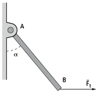
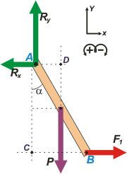

NO ME SALEN
(EJERCICIOS RESUELTOS Y APUNTES TEÓRICOS DE FÍSICA)
Estática
|
|

|
| |

|
NMS s2.10 - La barra rígida AB de peso P puede girar
libremente en el plano alrededor de A. Entonces
el valor de la fuerza F1 horizontal que aplicada en
el extremo B establece el equilibrio será:
a) 50 kgf b) 200 kgf c) 66,6 kgf
d) 37,5 kg e) 60 kgf d) 120 kgf
Datos:
P = 100 kgf; sen α = 0,6 |
 |
|
| Animate a predecir el comportamiento de F1 en este sistema. ¿Tenés alguna mesa rebatible en tu casa? Si α es pequeño, F1 ¿será pequeño o será grande? ¿Si α es 90? ¿Tendrá mucho que ver el peso de la tabla? Bueno, así. Pensá, jugá, predecí y después lo resolvemos, como siempre, comenzando por el DCL. |
|
|
|  |
Si gracias a F1 el cuerpo está en equilibrio entonces podemos aplicar las ecuaciones que describen el equilibrio.
Σ Fx = 0 → F1 — Rx = 0
Σ Fy = 0 → Ry — P = 0
Σ MA = 0 → F1 L cos α — P ½ L sen α = 0
Tanqui, te hago algunas aclaraciones para que no entres en pánico. Primero: tomé el punto A como centro de rotaciones o momentos porque era el más cómodo, no porque fuera el único posible. La ecuación que queda de ese modo es tan práctica que resulta autosuficiente. De ella sola sale la respuesta al problema sin necesidad de usar las otras dos. |
|
|
Si hubiera elegido cualquier otro punto el problema sale igual, pero hubiera necesitado el auxilio de las dos ecuaciones de Newton, las dos de arriba.
Segundo: Es recontra súper importante que entiendas cómo hice para plantear la ecuación de momentos. Olvidate de Rx y Ry, las rectas de acción de esas fuerzas pasan por A por lo tanto son incapaces de hacer rotar la barra, por eso sus momentos valen cero y no los puse. Las otras dos fuerzas tienen momentos no nulos. Entonces con una línea de puntos prolongué sus rectas de acción, ¿las ves? La de F1 la continué hasta el punto C y la de P la continué hasta el punto D. La distancia de F1 hasta A es CA , y la distancia de P hasta A es DA . ¿Estamos de acuerdo? Bien, ahora armás unos triangulitos rectánglos y expresás esas distandias en función del ángulo α y la longitud de la barra (para el caso de P será media longitud). Si hacés todo lo que te pedí sin perderte llegás a la ecuación de momentos que escribí arriba.
Fijate que si despejamos F1 la longitud de la barra, L, se cancela (eso es una suerte porque es un dato que falta en el ejercicio, pero no es casualidad, el autor lo sabía, por eso no lo puso. Por último se de cualquier ángulo te dal en valor de una función trigonométrica (en este caso el seno), te estan dando el valor del ángulo y el del resto de sus funciones, en este caso se trata de 37 grados y su coseno vale 0,8. FIN.
F1 = ½ P tg α
|
|
| |
F1 = 37,5 kgf |
respuesta d) |
|
|
| |
|
| |
| DISCUSION: La última ecuación, antes de la del resultado, describe suficientemente bien el sistema. Ahí podés chequear todas las respuestas que te diste a las preguntas del principio. ¿Habías acertado? |
|
 |
| DESAFIO: ¿Cuánto debe valer α para que F1 sea igual a 7 veces el peso ? |
|
Algunos derechos reservados.
Se permite su reproducción citando la fuente. Última actualización dic-06. Buenos Aires, Argentina.
|
|
|